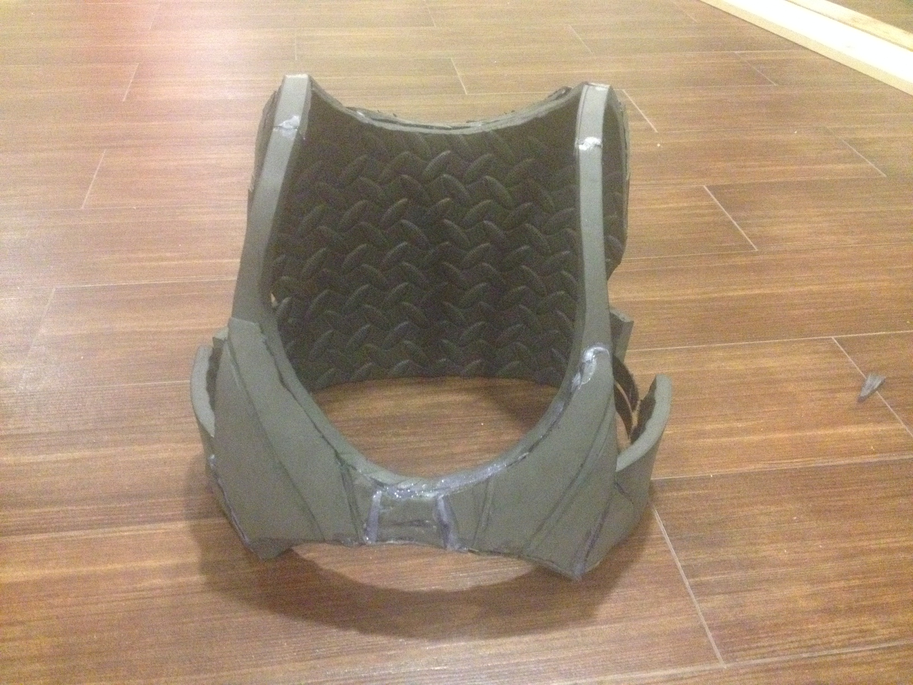
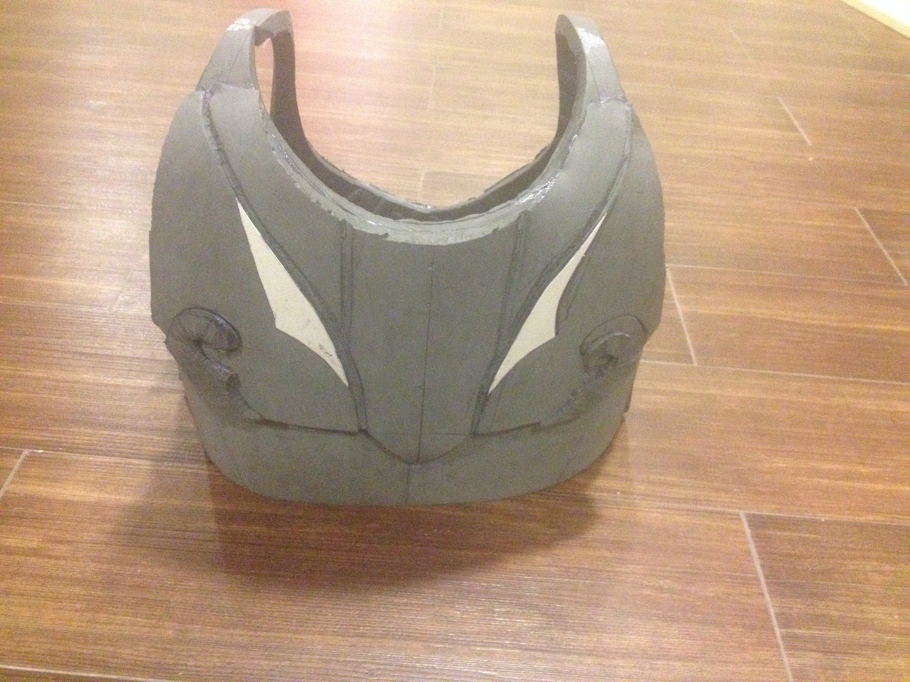
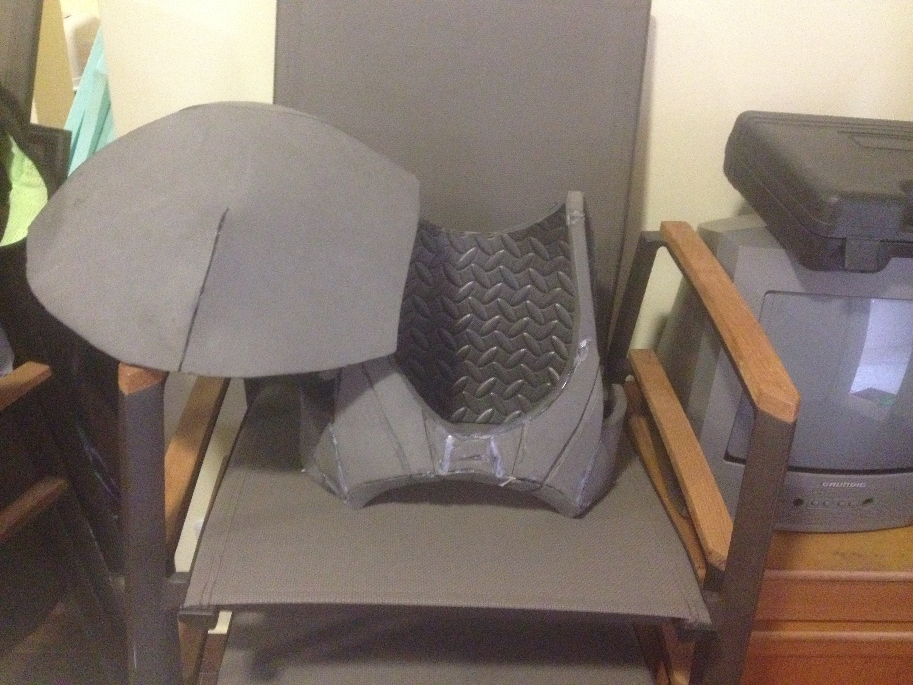
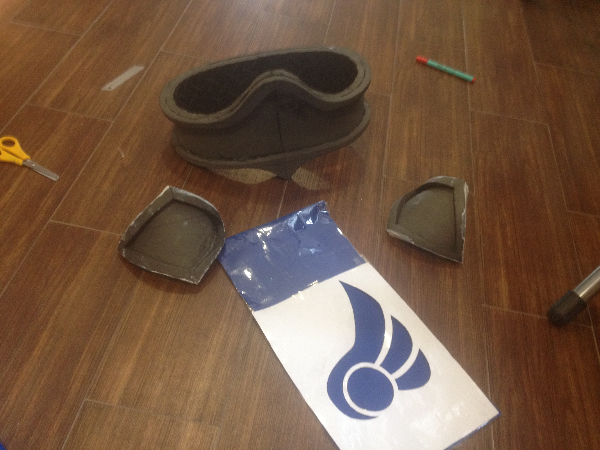
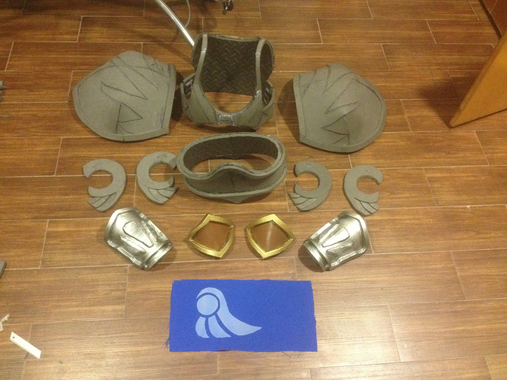
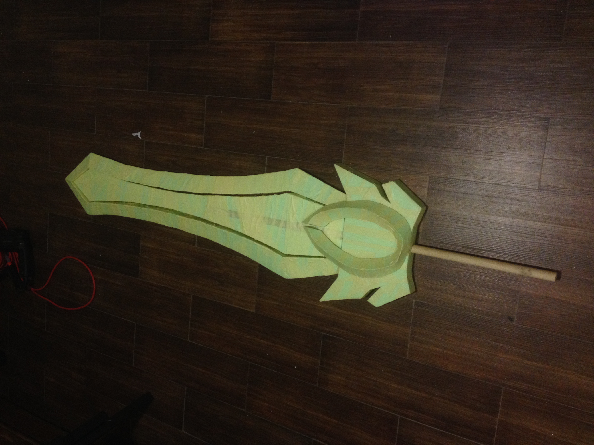
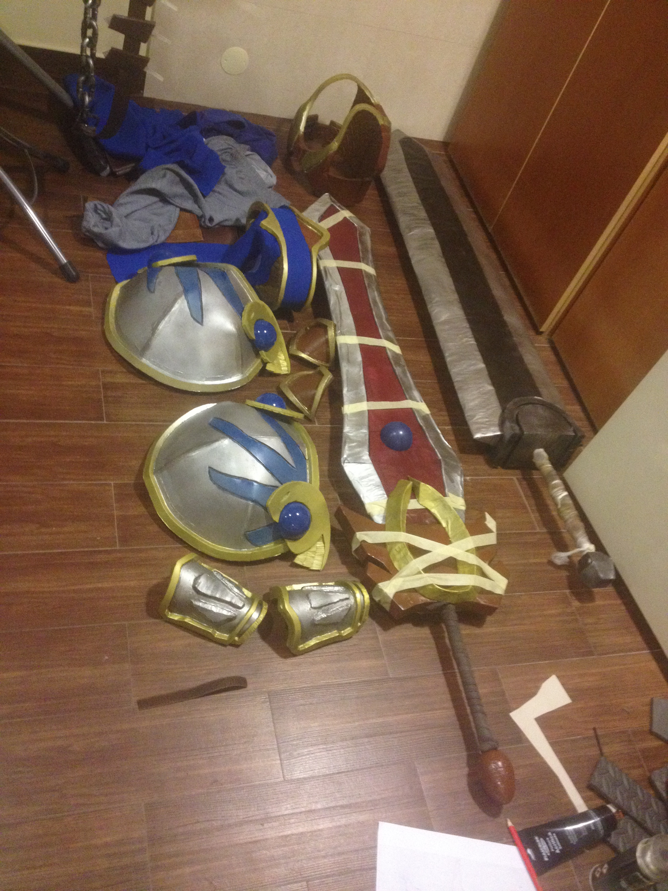
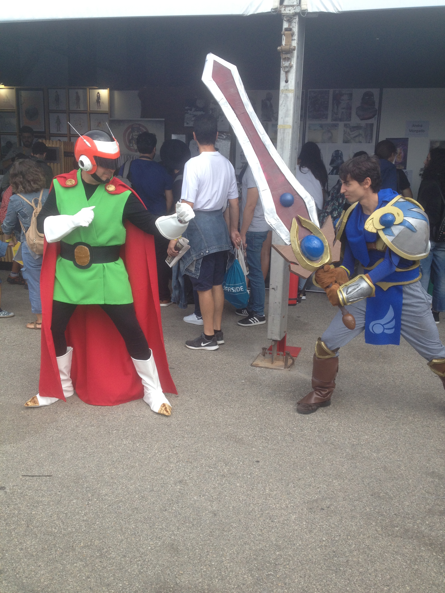
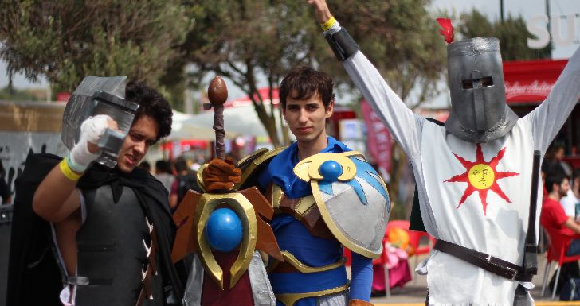

Making a Garen Cosplay from League of Legends
Published: September 26, 2024
Tags: Cosplay, Blender, Crafts, League of Legends
If you've read my Making Isaac Clarke's Level 3 Suit from Dead Space article, you should sorta get the gist of everything that's going on here. So I'm gonna avoid talking too much about the process, and more what I decided to do for each piece of the costume, as well as reflect a bit on the decisions I made.
So if you want to know what it takes to make a cosplay from scratch, go read that article! For everyone else, let's talk about my cosplay for Lisbon Comic Con 2018.
Why Garen, you might ask? I was a filthy Garen main back when I used to play League of Legends, and I'd say that I was pretty good (I mean, having over 500 thousand mastery points on him ought to mean something). Don't bother asking me the rank, because I refused to play competitive as Riot does a horrible job of curbing toxicity in the game. Thankfully it's not something I need to worry about anymore, because as a Linux user, I am literally not allowed to play this game anymore.
The Benefits of Interns
I mentioned in the previous article that I was doing the Isaac Clarke costume solo, which is a weird thing to highlight considering that most people do tend to make cosplays by themselves (after all, only one person will usually be able to wear it). But 2018 was my second year of university, so I had some new friends with me who wanted to spend some time together. I proposed each of us make cosplays for Lisbon Comic Con, to which they all agreed. One of my colleagues went as Solaire of Astora from Dark Souls, and another as Black Swordsman Guts from Berserk. Neither of my friends had experience with cosplay before, so I offered my tools and services in exchange for everyone helping one another. One other reason this came in handy was because our deadline was less than two months, and so having an extra pair of hands to help with some more intricate parts of the costumes came in handy.
{kind=link}
Unfortunately, this was the only year (so far) where I managed to convince friends to work on a cosplay with me. The big issue is that 2 months of summer time is a lot of precious time to spend indoors working on stuff, and doubly so for them since they had 30 minute drives to my place. Lisbon Comic Con is also, admittedly, not a very interesting event. So it's also hard to convince people to spend money for a subpar event.
Anyway, let's take a look at Garen's model and see what needs to be done.
Garen in Blender

Garen has five distinct armor pieces in his costume:
- Two large shoulder plates
- Two forearm guards
- Two knee guards
- One cuirass
- One belt
And of course, a big sword. Garen's costume has a few small variants, depending on which game art you're looking at. I chose to stick to how the character's 3D model looks in the game.
Since Garen's armor pieces are all very large (and because I hadn't found any store selling sufficiently thin EVA foam at the time), I went with 1cm thick foam pieces for everything.
The cuirass
At this time, I hadn't really though about using aluminum foil to create casts of my body, so I went about making stencils for the parts by just measuring my body, eyeballing the shape on paper, cutting it out, and testing it against my body. I would really recommend the aluminum foil method that I covered in the previous article though.
The breastplate was composed of a base 1cm foam piece, and a second one glued to provide the extra shape and depth that's shown in the model. Grooves were (unevenly) cut into the foam with an x-acto knife. One of the grooves was done mistakenly, and had to be refilled using hotglue. The grooves were too large to use the foam scoring method that I used extensively in the previous article. A Dremel really comes in handy for doing this sort of thing...

Hmm, could use more hot glue...
The back piece isn't too different, except it also has a decorate piece of foam on the left and right side that was made by cutting the 1cm foam in half. I also used a bit of paper to give some more depth to the design.

Both pieces are glued on the top, and since the foam is flexible, it can just be folded around my shoulders. To connect both pieces around my waist, they secure together with velcro strips.
Shoulder Plates
The comically oversized shoulder plates were made using a stencil which I found for shoulder plates online, enlarged to a silly degree. Then printed, cut, and transferred over to foam.
The first shoulder piece I made from two halves of the shoulder plate stencil, and the second I made from a single piece. I think doing it from two halves is better because it avoids a visible sharp edge in one of the glue points, but comes with the downside of requiring more work to hide the seams.
 Oh hey, it's that CRT that's in my room now!
The eagle head details were made from more 1cm pieces, with the wing pieces made by cutting one the foam in half from one corner to the other. The rims were made from multiple 1cm foam strips, the spherical crystals were halves of plastic balls, and the grooves in the shoulder plate were done the same way as the chest plate (badly).
 Notice the sharp points in the connecting folds of the right shoulderplate.
Notice the sharp points in the connecting folds of the right shoulderplate.
Belt and Other Bits
The belt was made from one large piece, glued at the back. I'm a relatively lean person, so I can just put the belt on like I'm trying to put some pants, and it fits snugly around my waist (especially when layers of clothes are added). The knee guards are also just one large piece each. All pieces have rims made from 1cm strips.
One of the rasons that I decided to connect the belt at the back is because the belt has a big strip of cloth around it, which helps to hide the seam.
Garen's belt has a big piece of cloth hanging down his crotch and his butt. I didn't actually glue the strips around the belt all the way, and I left a small unglued section so that these can be attached later. I made some paper stencils of the shapes, cut them out, and taped them around rectangle of cloth. Then I spray painted the shape in.
 The knee pieces have already been filled with Poly Max.
You need to make sure that the piece of paper is sitting as close as possible to the cloth, otherwise paint will sneak under the paper and alter the shape slightly. Bummer. Also make sure that the paper can survive getting wet, and won't just let the paint seam through.
Forearm guards are more bish bash bosh. 1cm foam base, with 1cm foam rims, with detail pieces made by cutting the foam in half. Very exciting stuff.

The Sword
Now this one is interesting. Unlike everything else, the sword was primarily made from 2 cm blue styrofoam. The handle is a one meter long wooden dowel with a 1 cm radius, wrapped in some fake leather. The fuller of the sword is one large piece, with a hole in the middle to fit the dowel. The crossguard is similar, except instead of having a hole for the dowel, it's made of two halves of 2cm pieces with a groove in them for the dowel. The detail piece in the center of the crossguard is made from multiple pieces of styrofoam, cut diagonally to give it the triangular cross-section. The pommel is a large styrofoam egg, and the blade of the sword is made from multiple triangular cross-section pieces.
These triangular pieces were, to put it lightly, a total pain in the ass to cut. Sawing into the styrofoam makes a big mess which needs to be sanded, and the thickness of the styrofoam made it impossible to easily cut with an x-acto knife as the blade would typically get stuck in the foam and come off from the handle. So, to cut these pieces, one of the interns and I held onto one end of a loose x-acto knife blade each, and we sawed the piece. This took a lot of hours and a lot of strength, especially because Gut's sword also needed to be done in a similar fashion. Styrofoam is wonderful, but if you want to have a good time cutting it, I recommend getting a hot-wire styrofoam cutter. You can even make one at home for super cheap!. Making one definitely would have saved us time that we lost cutting all the styrofoam...
Once everything was cut out, I glued everything and surrounded it in painters tape:

The tape serves two functions, the first is to help keep the shape in case anything breaks (all it takes is one swing against something), and the second is to prevent the spray paint from eating the foam. Now, of course, if I paint the sword like this, it will be filled with bumps and grooves since it's really hard to keep this tape flush. So, to finish the sword off, everything was covered in paper to provide a mostly flat surface. The paper was glued on using wood glue.
The sword also has some plastic balls for those big sphecial crystals. Those were attached with tape and hot glue on the inside.
Putting it all together
The pieces had their seams covered with Poly Max (again, only two layers due to time constraints), coated with black Plasti-Dip, and a few coats of their respective paint. Pieces of velcro were attached to different armor pieces, and painted brown to mimic leather.
The undergarments consisted of a blue shirt, light gray sweatpants, and some fake boots that came from a halloween costume. The gloves were genuine medieval-looking leather gloves that I bought online. They've been in storage for 6 years, I should probably check up on them to see if they haven't decayed sometime...
The pieces of the sword were also glued together, and covered in tape to ensure that the shape while the glue sets. This was literally all done the night before Comic Con. Yeah, we cut it really short...
 That's John Berserk's sword over there!!!
Postmortem
Tired and stressed, I stumbled my way into bed for my 5 hours of sleep before the event. It's unfortunate that this took so long to make, because there's plenty of things that needed work in the costume that I could not afford the time to do. To me, the largest problems are the fact that I didn't really get to do a sanding pass over the costume, so the seams in the shoulder pieces are very obvious, and I didn't get to do a blackwash pass over the paint. Despite the scrappy look though, a lot of people were happy to see The Might of Demacia walking around the Passeio Maritimo de Algés. Although Solaire stole most of his spotlight...
 Not a particularly fair fight, if you ask me.
To me though, the biggest problem with the costume were the shoulder pieces. The way I attached these to the costume was by having some super long velcro strips and to wrap them around my arm. Lemme tell you, this does not work. Those things would fall off constantly. I'm glad I went with friends, because they were there to help me with plenty of wardrobe malfunctions. If I were to change this for a Mark 2 of the costume, I would sew some velcro to the shirt's shoulder, and have the plates attach to those velcro pieces. I could also sew in some extra strips under my arm so that the the velcro can be roped under, to prvent it from sliding up and down my arm. I'd also like to reinforce the tip of the sword with some different material, maybe wood. The sharp tip didn't last very long when most photo poses were done with the sword's tip against the flore.
Oh yeah, and I could really get some actually good looking boots. That'd be nice...

League of Legends is a super popular franchise, so I wasn't very surprised seeing a lot of people who wanted to take photos with me. I definitely got a lot more attention than I did with the Dead Space costume. Goes to show that people don't really care about the quality of the costume that much... So if you ever feel reluctant to make a costume because you don't think you have the skills for it... Don't! People are excited to see other fans of stuff they like, the costume is secondary.
Most of the stencils used to form the foam pieces were hand drawn, but I do have some stencils that I drew on the PC available. I've linked my entire project folder here.